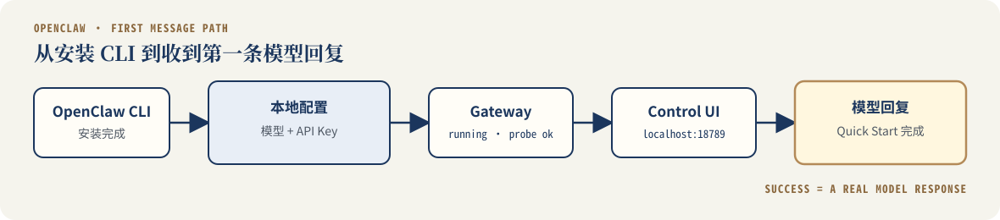

OpenClaw 快速开始：安装 CLI 并发送第一条消息
这篇文档适合谁
这篇文档适合第一次使用 OpenClaw，希望从命令行完成安装，并在浏览器中收到第一条模型回复的用户。
读者需要能够在终端中运行基础命令，并且已经准备好模型服务商账户和 API Key。你不需要提前理解 OpenClaw 的完整架构，完成本文后，可以根据每一步的成功信号判断核心链路是否已经跑通。
完成后你将能够
完成本文后，你将能够：
- 安装并验证 OpenClaw CLI 是否可用；
- 配置模型服务商、API Key 和默认模型；
- 确认 Gateway 正常运行；
- 打开 Control UI；
- 发送一条测试消息，并根据是否收到模型回复判断核心链路是否跑通。
预计用时： 5–10 分钟。首次下载、模型登录或网络速度可能延长操作时间。
完成标准： Control UI 成功返回一条模型回复。
开始前准备
开始前，请确认你已经具备：
- 一台 Windows、macOS 或 Linux 电脑；
- 可以使用的 PowerShell 或终端；
- Node.js 24.15 或更高版本；
- 稳定的网络连接；
- 一个受支持模型服务商的账户和 API Key。
本文统一采用 OpenClaw 官方推荐的 Node.js 24 路径。其他受支持版本和安装方式请查看官方 Node.js 要求。
运行以下命令检查 Node.js 版本：
node --version
终端应输出类似下面的版本号：
v24.15.0
版本低于要求时，请先更新 Node.js，再继续安装 OpenClaw。
保护 API Key
后续配置过程中，只在 OpenClaw 的本地引导界面中输入 API Key。
不要把真实 API Key 写入文档、命令示例、截图、GitHub 仓库或公开的问题反馈中。
步骤 1：安装 OpenClaw CLI
根据你的操作系统选择安装方式。
打开 PowerShell，运行：
iwr -useb https://openclaw.ai/install.ps1 | iex
打开 Terminal，运行：
curl -fsSL https://openclaw.ai/install.sh | bash
打开终端，运行：
curl -fsSL https://openclaw.ai/install.sh | bash
以上命令来自 OpenClaw 官方安装文档。
安装完成后，运行：
openclaw --version
成功信号
终端输出 OpenClaw 的版本号。这表示：
- OpenClaw CLI 已经安装；
- 当前终端能够识别
openclaw命令。
这一步还不能证明模型配置和 Gateway 已经完成。由于本文尚未进行本机实测，这里不展示具体版本输出。
终端提示找不到命令
关闭当前终端并重新打开，然后再次运行：
openclaw --version
安装程序可能已经更新环境变量，但当前终端还没有重新加载。
步骤 2：完成首次配置
首次配置会引导你选择模型服务商、输入 API Key，并把 Gateway 安装为本地后台服务。
运行：
openclaw onboard --install-daemon
按照引导完成配置。
| 引导内容 | 操作 |
|---|---|
| 模型服务商 | 选择你已经拥有账户和 API Key 的服务商 |
| API Key | 输入自己的 Key，不要使用文档中的示例值 |
| 默认模型 | 选择当前账户有权访问的模型 |
| 安装 Gateway 服务 | 确认安装 |
| Channels、Skills 或插件 | Quick Start 阶段可以暂时跳过 |
不同版本中的提示文字可能略有变化。请确认选择结果与上表一致，不需要要求界面逐字相同。
输入凭据时
- 不要截图包含 API Key 的页面；
- 不要把 API Key 粘贴到聊天、文档或 GitHub Issue；
- 屏幕共享时，先关闭或遮挡凭据输入区域。
成功信号
配置引导正常结束，并返回终端。
对读者而言，这表示本地配置已经写入。Gateway 是否真正运行，需要在下一步单独检查。
步骤 3：确认 Gateway 正常运行
Gateway 是 OpenClaw 在本地运行的服务，负责连接模型、会话和 Control UI。
运行：
openclaw gateway status
成功信号
输出中应显示 Gateway 正在运行。不同版本的字段可能不同，常见的成功信号包括：
Runtime: running
Connectivity probe: ok
同时，Gateway 应监听本地端口 18789。
这一步可以证明：
- Gateway 进程已经启动；
- 本地健康检查通过；
- Control UI 已经具备连接 Gateway 的条件。
它暂时不能证明模型配置一定有效。最终结果需要通过一条真实回复确认。
步骤 4：打开 Control UI 并发送消息
运行：
openclaw dashboard
OpenClaw 会在浏览器中打开 Control UI。
浏览器没有自动打开时，手动访问：
http://127.0.0.1:18789/
在聊天输入框中发送一条测试消息，例如：
请用一句话介绍你自己。
成功信号
Control UI 返回一条模型生成的回复。
这表示下面的核心链路已经跑通：

收到一条真实模型回复，才表示这条核心链路已经完成基本连通。
你已经完成 Quick Start
收到第一条真实回复后，OpenClaw 的安装、模型配置、Gateway 和 Control UI 已经完成基本连通。
没有成功时，从这里检查
选择与你当前现象一致的标签。
先关闭并重新打开终端，然后运行：
openclaw --version
仍然无法识别命令时，再检查 Node.js：
node --version
确认 Node.js 版本满足要求后，重新执行对应系统的安装命令。
再次检查状态：
openclaw gateway status
然后运行诊断：
openclaw doctor
根据诊断结果修复配置，再重新检查 Gateway 状态。
分享诊断结果前，请删除 API Key、访问令牌、本地用户名和其他个人信息。
先确认 Gateway 正常运行：
openclaw gateway status
然后手动打开：
http://127.0.0.1:18789/
Gateway 未运行时，Control UI 通常无法建立连接。
页面能够打开，只能说明本地 Control UI 可以访问。
没有收到模型回复时，重点检查：
- 模型服务商是否选择正确；
- API Key 是否有效；
- 当前账户是否有权使用所选模型；
- 默认模型是否已经配置。
重新进入配置：
openclaw configure
完成修改后，再次发送测试消息。
下一步
完成第一次对话后，可以继续：
资料来源
本文中的命令与流程已于 2026-07-27 对照官方资料核验，尚未在 Windows、macOS 或 Linux 上完成端到端实测。